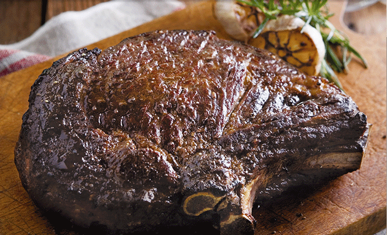
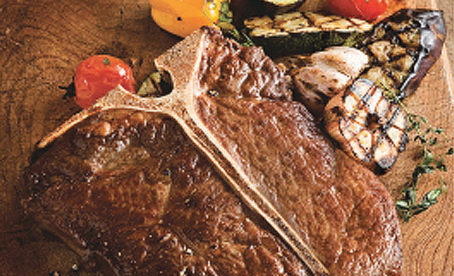
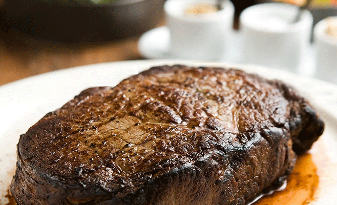

-
드라이 에이지드 본 인
립아이 스테이크Dry Aged Bone-In Ribeye Steak정통 스테이크 하우스에서만 만날 수 있는 Dry Aged Bone-In Ribeye Steak는 3주간 전용 에이징 쿨러에서 약 5cm 두께의 두툼한 립아이 를 뼈채 숙성하여 립아이 특유의 깊은 맛과 향이 강화된 프리미엄 스테이크입니다.
여기에 더스테이크하우스 바이 빕스만의 축적 된 스테이크 조리방식이 더해져 고기 겉면의 바삭한 크러스트와 립아이 특유의 부드러운 식 감을 동시에 느낄 수 있는 정통 스테이크입니다. -
포터하우스 스테이크Porter House Steak

포터하우스는 스테이크 중앙에 T(티)자 모양으로 소의 허리 부위에서 나오며, 채끝등심과 안심이 T(티)자 뼈 양쪽으로 두툼하게 붙어있어 많은 양으로 즐길 수 있는 최고급 스테이크 입니다. 포터하우스와 T-Bone 스테이크는 비슷해 보이지만 차이점은 안심 부위의 크기가 다릅니다.
소의 허리에서 먼저 포터하우스 부위를 만들어 등심과 안심의 비율이 일정하지만, T-Bone 스테이크는 포터하우스를 잘라낸 후 그 앞부분을 자르게 되어 등심 부위 보다 크기가 작은 안심부위가 적게 붙어 있기 때문입니다. -
드라이 에이지드 스테이크Dry Aged Steak

숙성 방법 중 전통적인 방식이며, 미국 뉴욕의 전문 스테이크 하우스에서 사용하는 고기 숙성 방법입니다. 고기 겉면의 핏물을 제거하고 에이징 쿨러(Aging cooler)에서 건조 숙성시키는 방법을 말합니다. 건조 숙성 기간은 2주 ~ 6주까지입니다. 이 과정에서 고기가 상하지 않게 하기 위해 온도, 습도, 통풍 등의 조건을 적정 수치로 일정하게 유지시켜 숙성을 하는 것이 포인트입니다.
드라이 에이징 된 고기는 보라빛 적색을 띄고 있는 것이 특징입니다. 이 숙성 과정에서 겉이 말라 양이 약 40% ~ 70% 정도 축소를 하게 되지만, 육즙이 속으로 배어들어 익혔을 때 일반 스테이크보다 육즙을 더욱 많이 머금고 있고 또한 특유의 숙성된 향을 가지고 있어, 프리미엄 스테이크로 많은 분들의 사랑을 받고 있습니다. 대신 숙성 과정에서 겉이 말라 제거를 하는 부분이 생겨 그 관리와 조리가 어렵고 가격이 높아 스테이크 전문 레스토랑에서만 경험을 하실 수 있습니다.